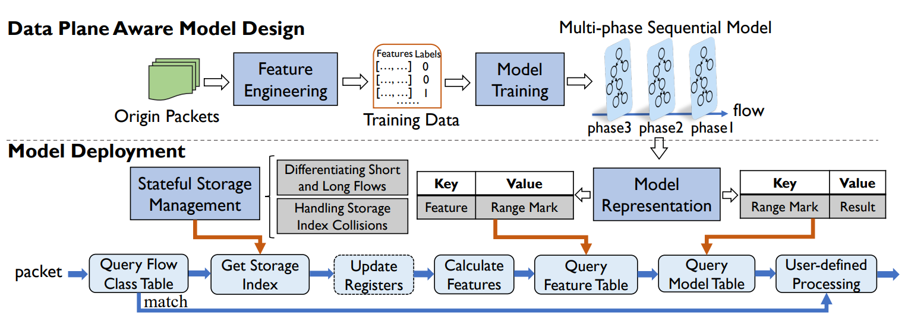
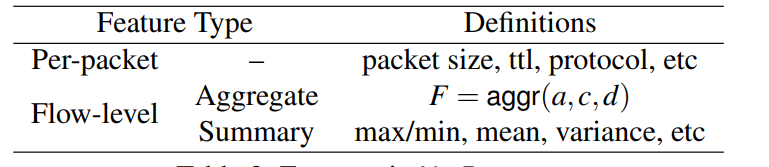
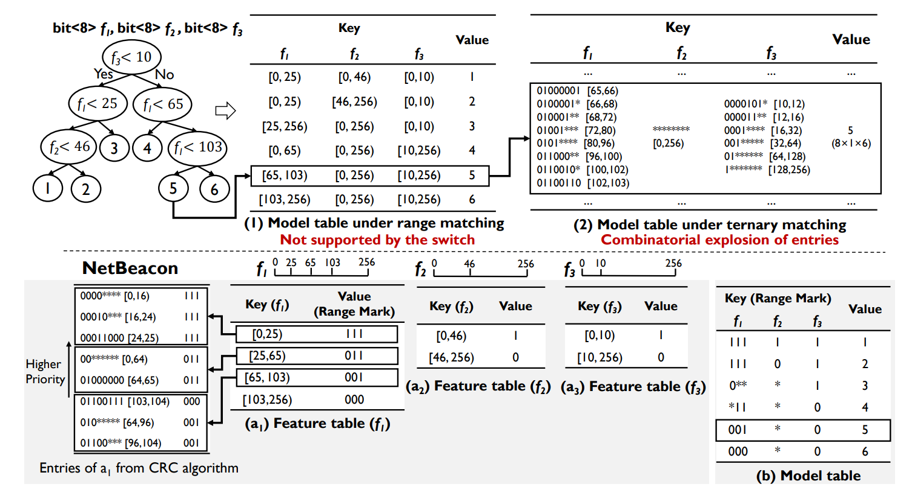
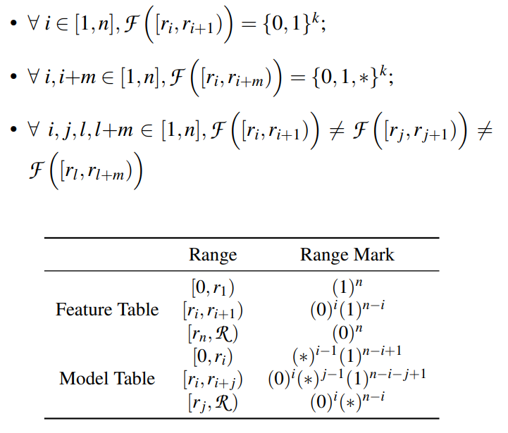
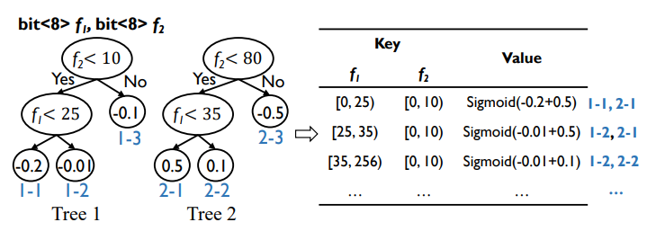
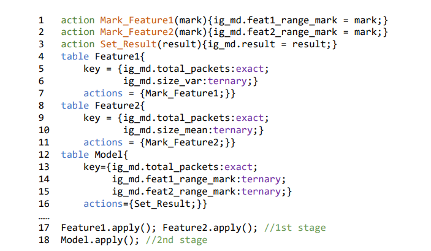
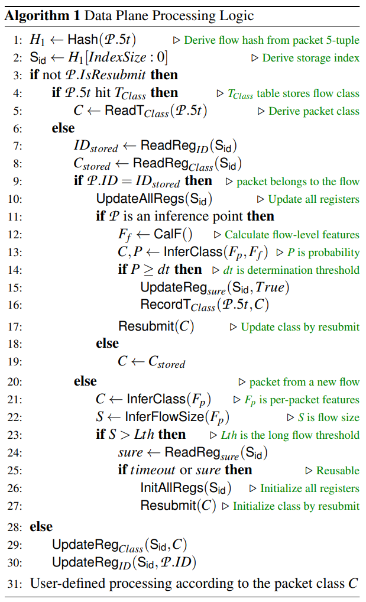

这是一篇来自清华大学的计算机网络相关的论文阅读分享，论文名为 An Efffcient Design of Intelligent Network Data Plane。
概要
智能数据平面（IDP）：通过直接在网络数据平面上部署机器学习模型，可以使用数据驱动的模型而不是预定义的协议以线速(网络转发零减少速度)进行智能流量分析。
新兴的可编程交换机为IDP的实现提供了关键的硬件支持。 这方面的现有技术分为两大类：(i)侧重于从数据平面提取有用的流量信息，而将基于学习的流量分析放在控制平面上。 (ii) 进一步将学习模型嵌入到数据平面中，同时未能使用对于实现高学习精度至关重要的流级特征。 在本文中，提出 NetBeacon 来提高模型准确性和模型部署效率方面的最新水平。 特别是，NetBeacon 提出了一种多阶段顺序模型架构，通过合并可线速计算的流级特征来提高学习准确性，从而在流的不同阶段执行动态数据包分析。 此外，NetBeacon 设计了高效的模型表示机制，以解决在网络数据平面上部署基于树的模型时的表条目爆炸问题。 最后，NetBeacon 通过多个紧密耦合的设计来强化其处理并发流的可扩展性，以管理用于存储每个流状态的有状态存储。 实现了 NetBeacon 原型，并广泛评估了其在多个流量分析任务中的性能。
问题提出
人工智能（AI）在各种网络设计中越来越受欢迎，例如视频比特率自适应、拥塞控制、流量优化、路由和网络规划。 学习的模型通常部署在终端主机或网络控制平面上以执行推理，这些主机配备了灵活的通用处理器或 GPU。
然而，直接在网络数据平面上部署用于流量分析的学习模型是一个相对较少的领域。 例如，日益复杂的网络攻击通常绕过经验学习的流量过滤器，激励社区设计基于学习的恶意流量检测机制。 然而，与这些方法不同的是，IDP 实现了线速流量分析，而在网络控制平面上部署学习模型的最先进技术只能以大约 10 Gbps 的速度处理流量。 此外，将控制平面放置在流量分析的关键路径上会引入额外的反应时间。 除了安全域之外，其他网络设计（例如差异化路由、ECN阈值调整和缓冲区管理）也可能受益于IDP。
模型
NetBeacon：一种新颖的 IDP 设计，它在模型准确性和模型部署效率方面都达到了最先进的水平。NetBeacon 在流量分析/分类精度和硬件表消耗方面均优于现有技术。具有以下创新设计：
(i) 围绕多阶段顺序模型架构的数据平面感知学习模型设计。 由于流的不同阶段的数据包携带不同的流级别状态，因此该模型在流的不同阶段进行动态分析，从而减少基于单个推理模型做出过早分类决策所引入的错误。 同时，该模型使用精心设计的流级和每数据包特征，可在数据平面上以线速计算，以确保可部署性。
(ii) NetBeacon提出了一种有效的模型表示机制，以解决将决策树或森林模型表示为数据平面匹配表时的条目爆炸问题。 与最先进的 Mousika [51] 相比，NetBeacon 显着减少了表项消耗（在某些情况下高达 75%）。
(iii) 通过区分短流和长流的处理逻辑，以及在观察存储索引冲突时允许安全存储复用，进一步强化了 NetBeacon 处理并发流的可扩展性。 这可能允许 NetBeacon 处理比用于维护每个流状态的寄存器总数更多的并发流。
NetBeacon架构设计：

从架构上来说，NetBeacon 围绕两个主要组件进行设计：数据平面感知模型设计和高效模型部署。
数据平面感知模型设计是一种生成硬件友好的学习模型的协同设计方法。 为此，该设计的特征工程依赖于在切换管道上以线速可提取或可计算的特征。 此外，考虑到流级特征（例如，数据包大小的平均值）随着流的进行而变化，NetBeacon 提出了一种多阶段顺序模型架构，可以随着流的进行而做出多个推理决策，直到系统有足够的信心做出最终决定。
模型部署的关键设计是模型表示模块。 它将学习到的模型转换为数据平面上的多个特征表和一个模型表，其中特征表将特征值编码为名为范围标记的数据结构，这些数据结构进一步映射到模型表中存储的推理结果。 NetBeacon设计了高效的编码机制，大大减少了模型表示时的表项消耗。
此外，NetBeacon还设计了状态存储管理模块，以实现数据平面上高效的每流状态管理。 一方面，该模块使 NetBeacon 能够使用纯粹的每数据包特征（即，不为短流维护每流状态）来处理短流，其中使用学习模型对短流进行分类。 另一方面，NetBeacon利用硬件哈希来实现存储复用。 特别是，当新流的5元组被散列到占用的寄存器（即存储冲突）时，如果存储的流是类确定的或超时的，则新流可以占用该寄存器； 否则，NetBeacon 会回退到对新流使用无状态每数据包功能。 如果数据包属于存储的流，则更新寄存器并计算特征以进行模型推理，即查询特征表和模型表。 一旦确定了数据包的推理结果，用户就可以根据结果设计定制的后处理，例如做出丢弃或允许的二元决策，或相应地分配细粒度的不同服务优先级。
数据平面感知模型设计
NetBeacon 中的决策树学习模型可以使用每数据包特征和流级特征。

包级特征即包大小、生存时间值、协议。
流级特征分为聚合特征和汇总特征。 聚合特征表示为
$$
F = aggr(a, c,d)
$$
其中 a 表示 F 中考虑的属性，c 是对该属性施加的条件，d 表示一旦数据包更新 F 值的预定规则需满足 c。例如：
$$
feature F = aggr(packet size,[96,112),+1)
$$
记录了一个流中的数据包数量，其数据包大小在[96,112)范围内。 与聚合特征不同，汇总特征的计算不能通过预先确定的更新规则轻松表示。 代表性的汇总特征是最大值/最小值、平均值和方差，甚至涉及硬件本身不支持的乘法或除法。流级特征是通过组合同一流中其他数据包的属性来获得的，一般来说，把具有相同五元组（源 IP 地址、源端口号、目的 IP 地址、目的端口号、协议号）的数据包集合定义为一条流。

数据平面感知模型将范围特征进行特定的编码，解决了上面三元条目组合爆炸问题以及交换机不支持范围匹配的问题。

多阶段顺序模型
NetBeacon坚持基于决策树的学习模型，采用最先进的决策树森林模型，即随机森林（RF）和XGBoost（XGB）。 同时考虑到硬件上表项的数量是有限的，通过限制森林中的树数、最大树深度、最大叶子数等来控制模型大小。

他们设计了一个多阶段模型架构，以便在流程的不同阶段应用不同的模型。 在每个阶段，NetBeacon 使用该阶段计算的特征进行训练和推理，即第 n 个数据包的流级特征是根据前 n 个数据包计算的。该模型做出推理决策的数据包称为推理点。 推理点的精确排列取决于任务。 特别是，每个推理点本质上代表了该模型处理推理点之前的 n 个数据包之后流的分析结果。 因此，可以根据任务统一或具体地放置推理点。NetBeacon 为每个推理阶段设置确定阈值。 当特定推理点的分类概率高于相应的确定阈值时，表明多阶段顺序模型有信心在不使用后续推理点的情况下预先确定流的类别。
从单个决策树的数据平面表示开始。 在决策树中，叶子节点代表分类结果，从根节点到叶子节点的路径代表该叶子节点的匹配规则，通常是多个特征范围的串联。如图 6 中的模型表（1）所示，其中键是多个特征范围的串联，值是叶节点。NetBeacon 通过引入一种名为范围标记的新颖机制解决了上述条目组合爆炸问题。决策树模型表示为多个特征表（每个特征一个）和一个模型表。 范围标记机制确保每个叶节点仅消耗模型表中的单个三元条目，无论有多少特征表条目与该叶节点相关。从范围匹配（1）到三元匹配（2），表示叶 5 的表条目数从 1 增加到 48（8 × 1 × 6）。 在 NetBeacon 中，每个叶子仅消耗模型表中的 1 个条目。 特征表由所有叶子共享，并且它们的条目通过新颖的范围编码算法（CRC）减少。
NetBeacon 不是单独表示各个树，而是合并它们的模型表示。 具体来说，给定特征 f1，每个单独的树都可以有一个特征表。 合并这些特征表与使用该范围标记算法考虑这些表中出现的所有特征值范围来创建新的特征表相同。 对于模型表，每个条目代表各个树的叶子的一种组合。 因此，模型表条目的关键是通过考虑到与该条目关联的叶子的路径上的所有节点（代表特征范围）而获得的范围标记，并且对应的值是这些叶子的聚合（例如，Sigmoid） ，可以离线计算。 例如，图 9 中的叶子 1-2 和叶子 2-1 的组合将 f1 ∈ [25,256) 和 f1 ∈ [0,35) 合并，形成 f1 ∈ [25,35)。 组合的值为Sigmoid(-0.01+0.5)。
多阶段模型推理
该多阶段顺序模型架构在不同的推理点应用不同的模型。 直观上， 用自己的特征表和模型表分别表示每个阶段的每个模型。 或者，可以合并它们的表示。 如图所示，特征表和模型表都有一个名为total_packets的额外键，用于区分不同阶段的模型。 考虑到这些模型可能使用不同的特征，如果某个特征未被特定模型使用，则将该特征的范围标记设置为*来表示任意范围标记。 一般来说，模型推理分为两个阶段：一个阶段用于并行匹配特征表，一个阶段用于匹配（聚合）模型表。

有状态存储
为了利用流级功能，NetBeacon 依靠有状态存储来维护每个流的状态。 涉及控制平面在接收新流时分配不冲突的存储索引。 为了实现线速流量分析，NetBeacon 依赖于数据平面上随时可用的硬件哈希来分配存储索引。 特别是，假设有 N 个有状态寄存器可用于存储流状态，NetBeacon 将流的存储索引计算为 H（5 元组）% N，其中 H 是哈希函数。 然而，基于哈希的存储索引分配存在分配冲突的问题，即两个不同的流（具有不同的五元组）可能接收相同的存储索引。 因此，有必要将真实的流 ID（例如，5 元组）与存储索引一起存储，以便 NetBeacon 意识到冲突。 一旦发生存储冲突，如果新流覆盖存储，则原始流和新流的每流状态都将变脏。 因此，NetBeacon 提出了两种设计来缓解这一问题：一种设计可减少总体冲突几率，另一种设计可实现安全存储覆盖。
区分短流和长流。 在每个数据包特征之上合并成流级特征的原因是为了提高分类准确性。 由于流量分析的主要目标是提高所有流的总体数据包分类准确性，因此为具有较少数据包的较短流维护每流状态的边际回报比为较长流维护每流状态的边际收益要低。 NetBeacon引入了一种长短流二元分类模型，仅使用每个数据包的特征来判断数据包是否属于长流，并且长短流二元分类模型是特定于任务的。
处理存储索引冲突。 当存储索引发生冲突时，如果现有流的推理类已确定或流已完成（即，其最后一个数据包到达时间超过预定义的超时），NetBeacon 允许新流使用占用的寄存器。 否则，NetBeacon 将回退到对新流使用每数据包无状态功能。 如果流已通过多阶段顺序模型中定义的最后一个推理点，或者模型对流在中间推理点的推理结果有足够的信心，则确定流的推理类/结果，将流的推理结果保存在流类表中，并以流的 5 元组为关键字，以匹配该流中的后续数据包。 同时，它更新流的存储以标记其推理结果已确定，表明占用的寄存器已准备好在存储索引冲突时被未来流覆盖。 在从数据平面接收到指示流的类别已确定的消息后，控制平面将新条目动态插入到流类别表中。 同时，需要定期删除流类表中的一些条目（基于 FIFO 或 LRU 原则）以防止表溢出。
集成的数据平面处理逻辑

当数据包 P 到达时，其流哈希 H1 通过对数据包的 5 元组进行哈希计算（算法 1 中的第 1 行）。 然后哈希值的最后 IndexSize 位被用作存储索引 Sid（算法 1 中的第 2 行）。 如果 P 是正常数据包（即，不是重新提交数据包，如下所述），则它与流类别表 TClass 匹配（算法 1 中的第 4 行）。 如果匹配，则直接将数据包的推理结果/类别指定为匹配的类别。
否则，NetBeacon 检查状态存储中是否已为数据包 P 分配了每流状态存储。 为此，它使用 Sid 检索存储的真实流 ID（例如，5 元组）并将其与 P 的流 ID 进行比较。 如果它们相等，NetBeacon 会识别出存储在 Sid 的流的新数据包，然后相应地更新流的状态。 同时，如果P恰好是推理点，NetBeacon会计算流级特征Ff，NetBeacon根据流级特征Ff，以及从P中提取的每包Fp进行模型推理。如果分类概率大于预定义的 阈值dt，流的类别被确定。 之后，数据平面首先更新流的存储Regsure以指示其类别已确定，然后通知控制平面将流插入流类别表中。 如果P不是推理点，则使用存储的推理结果（即最近的推理点得到的结果）作为自己的分类结果。 相反，如果 P 属于没有现有存储的流，则 NetBeacon 仅使用 P 的每个数据包特征来获取其分类结果。如果 P 被分类为长流数据包，NetBeacon 将检查 Sid 上的存储是否为空或已存在。 准备被覆盖。 如果是，NetBeacon 使用 Sid 索引的存储来启动 P 流的每流状态。 因此，当存储的流被类确定（或超时）时，存储寄存器被延迟释放，同时新的流被散列到寄存器。 在整个流量分析过程中，NetBeacon 使用重新提交的数据包 (i) 更新现有流的新推理结果或 (ii) 启动新流的存储。 由于Resubmit的目的是触发前阶段寄存器的修改（而不是修改数据包本身），因此我们可以通过将数据包镜像到环回端口来触发修改，而不是重新提交或重新循环，这样原始数据包就不会被修改。 延迟。 此外，只有触发推理结果更新的推理点数据包才会被镜像，仅占数据包的一小部分。
控制平面逻辑
在NetBeacon中，控制平面负责：（i）从一开始就在数据平面上安装特征表和模型表，（ii）在接收到来自数据的请求时更新流类表确定流级时的平面。 当然，更新流类别表的延迟不会影响流量分析，因为与流类别表不匹配的数据包将改为遍历常规模型推理管道。 因此，控制平面脱离了 NetBeacon 中数据包分类的关键路径，保证了线速流量分析。